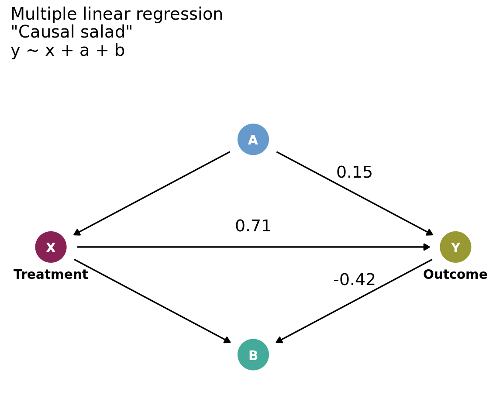
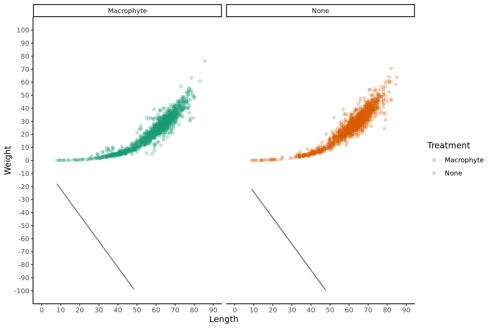
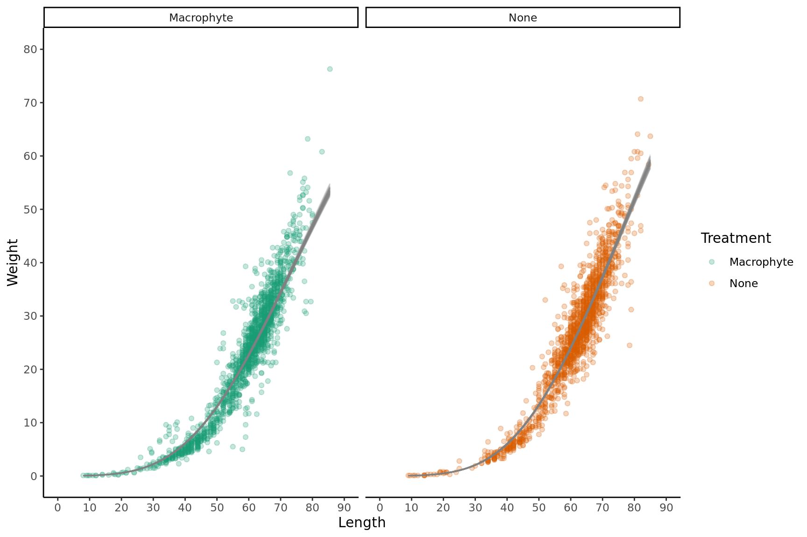

Causal Inference
Bayes tools
Introduction
Without consideration of the causal structure underlying data, it is easy to draw incorrect conclusions.
Below is a simple example using a simulated dataset with four variables (Y, X, A, B).
Simulated data
Figure 1: DAG of the simulated data that shows the relationships (arrows) between the outcome (Y), treatment (X), and other measured variables (A + B). The numbers on the arrows represent the known magnitude and direction of relationships with Y.
Under the hood
Science before statistics
- Most approaches fail to recover the simulated value of -1.70.
fit_brm <- function(formula, model_name) {
brm(formula,
family = gaussian(link = "identity"),
data = sim_dat,
file = paste0(here("Analysis/Models/", model_name)),
backend = "cmdstanr",
threads = threading(3),
silent = 0,
refresh = 500,
chains = 4,
cores = 4,
warmup = 2000,
iter = 4000)
}
# Models
mod_1 <- fit_brm(y ~ x, "mod_1") # Univariate
mod_2 <- fit_brm(y ~ a, "mod_2") # Univariate
mod_3 <- fit_brm(y ~ b, "mod_3") # Univariate
mod_4 <- fit_brm(y ~ x + a + b, "mod_4") # Casual Salad
mod_5 <- fit_brm(y ~ x + a, "mod_5") # Confounder
mod_6 <- fit_brm(y ~ x + b, "mod_6") # Collider Family: gaussian
Links: mu = identity; sigma = identity
Formula: y ~ x
Data: sim_dat (Number of observations: 1000)
Draws: 4 chains, each with iter = 4000; warmup = 2000; thin = 1;
total post-warmup draws = 8000
Regression Coefficients:
Estimate Est.Error l-95% CI u-95% CI Rhat Bulk_ESS Tail_ESS
Intercept 8.78 0.24 8.32 9.24 1.00 8570 6216
x -1.40 0.00 -1.41 -1.39 1.00 8980 6141
Further Distributional Parameters:
Estimate Est.Error l-95% CI u-95% CI Rhat Bulk_ESS Tail_ESS
sigma 2.15 0.05 2.06 2.25 1.00 8075 5450
Draws were sampled using sample(hmc). For each parameter, Bulk_ESS
and Tail_ESS are effective sample size measures, and Rhat is the potential
scale reduction factor on split chains (at convergence, Rhat = 1). Family: gaussian
Links: mu = identity; sigma = identity
Formula: y ~ a
Data: sim_dat (Number of observations: 1000)
Draws: 4 chains, each with iter = 4000; warmup = 2000; thin = 1;
total post-warmup draws = 8000
Regression Coefficients:
Estimate Est.Error l-95% CI u-95% CI Rhat Bulk_ESS Tail_ESS
Intercept -8.20 0.33 -8.86 -7.56 1.00 7597 6147
a -5.04 0.03 -5.10 -4.98 1.00 7606 6462
Further Distributional Parameters:
Estimate Est.Error l-95% CI u-95% CI Rhat Bulk_ESS Tail_ESS
sigma 3.97 0.09 3.80 4.15 1.00 8528 6338
Draws were sampled using sample(hmc). For each parameter, Bulk_ESS
and Tail_ESS are effective sample size measures, and Rhat is the potential
scale reduction factor on split chains (at convergence, Rhat = 1). Family: gaussian
Links: mu = identity; sigma = identity
Formula: y ~ b
Data: sim_dat (Number of observations: 1000)
Draws: 4 chains, each with iter = 4000; warmup = 2000; thin = 1;
total post-warmup draws = 8000
Regression Coefficients:
Estimate Est.Error l-95% CI u-95% CI Rhat Bulk_ESS Tail_ESS
Intercept 0.24 0.11 0.02 0.46 1.00 8126 6167
b -0.27 0.00 -0.27 -0.27 1.00 10143 6244
Further Distributional Parameters:
Estimate Est.Error l-95% CI u-95% CI Rhat Bulk_ESS Tail_ESS
sigma 1.16 0.03 1.11 1.21 1.00 4012 3903
Draws were sampled using sample(hmc). For each parameter, Bulk_ESS
and Tail_ESS are effective sample size measures, and Rhat is the potential
scale reduction factor on split chains (at convergence, Rhat = 1). Family: gaussian
Links: mu = identity; sigma = identity
Formula: y ~ x + a + b
Data: sim_dat (Number of observations: 1000)
Draws: 4 chains, each with iter = 4000; warmup = 2000; thin = 1;
total post-warmup draws = 8000
Regression Coefficients:
Estimate Est.Error l-95% CI u-95% CI Rhat Bulk_ESS Tail_ESS
Intercept -4.03 0.32 -4.65 -3.40 1.00 3138 4273
x 0.71 0.04 0.63 0.79 1.00 3070 3834
a 0.15 0.06 0.04 0.26 1.00 4102 5140
b -0.42 0.01 -0.43 -0.40 1.00 3635 4377
Further Distributional Parameters:
Estimate Est.Error l-95% CI u-95% CI Rhat Bulk_ESS Tail_ESS
sigma 0.92 0.02 0.88 0.96 1.00 5725 4395
Draws were sampled using sample(hmc). For each parameter, Bulk_ESS
and Tail_ESS are effective sample size measures, and Rhat is the potential
scale reduction factor on split chains (at convergence, Rhat = 1). Family: gaussian
Links: mu = identity; sigma = identity
Formula: y ~ x + a
Data: sim_dat (Number of observations: 1000)
Draws: 4 chains, each with iter = 4000; warmup = 2000; thin = 1;
total post-warmup draws = 8000
Regression Coefficients:
Estimate Est.Error l-95% CI u-95% CI Rhat Bulk_ESS Tail_ESS
Intercept 12.32 0.43 11.47 13.16 1.00 3341 4050
x -1.72 0.03 -1.78 -1.65 1.00 2829 3080
a 1.15 0.12 0.92 1.39 1.00 2819 3058
Further Distributional Parameters:
Estimate Est.Error l-95% CI u-95% CI Rhat Bulk_ESS Tail_ESS
sigma 2.06 0.05 1.97 2.16 1.00 4982 4378
Draws were sampled using sample(hmc). For each parameter, Bulk_ESS
and Tail_ESS are effective sample size measures, and Rhat is the potential
scale reduction factor on split chains (at convergence, Rhat = 1). Family: gaussian
Links: mu = identity; sigma = identity
Formula: y ~ x + b
Data: sim_dat (Number of observations: 1000)
Draws: 4 chains, each with iter = 4000; warmup = 2000; thin = 1;
total post-warmup draws = 8000
Regression Coefficients:
Estimate Est.Error l-95% CI u-95% CI Rhat Bulk_ESS Tail_ESS
Intercept -4.68 0.22 -5.11 -4.24 1.00 3438 4593
x 0.78 0.03 0.72 0.84 1.00 3175 3946
b -0.42 0.01 -0.43 -0.41 1.00 3181 3901
Further Distributional Parameters:
Estimate Est.Error l-95% CI u-95% CI Rhat Bulk_ESS Tail_ESS
sigma 0.93 0.02 0.89 0.97 1.00 4964 4359
Draws were sampled using sample(hmc). For each parameter, Bulk_ESS
and Tail_ESS are effective sample size measures, and Rhat is the potential
scale reduction factor on split chains (at convergence, Rhat = 1).[1] "mod_1: -1.4"[1] "mod_2: -5.04"[1] "mod_3: -0.27"[1] "mod_4: 0.71, 0.15, -0.42"[1] "mod_5: -1.72"[1] "mod_6: 0.78"[1] "Example Stan code for mod_1"// generated with brms 2.22.0
functions {
}
data {
int<lower=1> N; // total number of observations
vector[N] Y; // response variable
int<lower=1> K; // number of population-level effects
matrix[N, K] X; // population-level design matrix
int<lower=1> Kc; // number of population-level effects after centering
int prior_only; // should the likelihood be ignored?
}
transformed data {
matrix[N, Kc] Xc; // centered version of X without an intercept
vector[Kc] means_X; // column means of X before centering
for (i in 2:K) {
means_X[i - 1] = mean(X[, i]);
Xc[, i - 1] = X[, i] - means_X[i - 1];
}
}
parameters {
vector[Kc] b; // regression coefficients
real Intercept; // temporary intercept for centered predictors
real<lower=0> sigma; // dispersion parameter
}
transformed parameters {
real lprior = 0; // prior contributions to the log posterior
lprior += student_t_lpdf(Intercept | 3, -58.4, 20);
lprior += student_t_lpdf(sigma | 3, 0, 20)
- 1 * student_t_lccdf(0 | 3, 0, 20);
}
model {
// likelihood including constants
if (!prior_only) {
target += normal_id_glm_lpdf(Y | Xc, Intercept, b, sigma);
}
// priors including constants
target += lprior;
}
generated quantities {
// actual population-level intercept
real b_Intercept = Intercept - dot_product(means_X, b);
}
Figure 2: Various regression approaches to estimate the Y ~ X relationship (simulated value -1.71). Coefficients on arrows represent the estimated magnitude and direction of relationships. Conditioning on the confounder (A) returns the simulated value.
Everything, everywhere, all at once
- Modeled as a series of structural equations that represent the data generating process.
# Model
se_1 <- bf(x ~ a, family = gaussian)
se_2 <- bf(y ~ x + a, family = gaussian)
se_3 <- bf(b ~ x + y, family = gaussian)
mod_7 <- fit_brm(se_1 + se_2 + se_3 + set_rescor(FALSE), "mod_7") # Full Luxury Bayesian Inference Family: MV(gaussian, gaussian, gaussian)
Links: mu = identity; sigma = identity
mu = identity; sigma = identity
mu = identity; sigma = identity
Formula: x ~ a
y ~ x + a
b ~ x + y
Data: sim_dat (Number of observations: 1000)
Draws: 4 chains, each with iter = 4000; warmup = 2000; thin = 1;
total post-warmup draws = 8000
Regression Coefficients:
Estimate Est.Error l-95% CI u-95% CI Rhat Bulk_ESS Tail_ESS
x_Intercept 11.94 0.16 11.62 12.27 1.00 11177 5534
y_Intercept 12.32 0.43 11.50 13.15 1.00 6507 5784
b_Intercept -14.90 0.33 -15.55 -14.25 1.00 7304 6715
x_a 3.60 0.02 3.57 3.64 1.00 11852 5254
y_x -1.72 0.03 -1.78 -1.66 1.00 6399 5761
y_a 1.15 0.12 0.93 1.39 1.00 6465 5641
b_x 2.46 0.04 2.38 2.54 1.00 6581 5554
b_y -1.93 0.03 -1.99 -1.88 1.00 6501 5596
Further Distributional Parameters:
Estimate Est.Error l-95% CI u-95% CI Rhat Bulk_ESS Tail_ESS
sigma_x 1.98 0.04 1.89 2.06 1.00 11588 5687
sigma_y 2.06 0.05 1.97 2.16 1.00 12391 5449
sigma_b 1.98 0.04 1.90 2.07 1.00 12765 5688
Draws were sampled using sample(hmc). For each parameter, Bulk_ESS
and Tail_ESS are effective sample size measures, and Rhat is the potential
scale reduction factor on split chains (at convergence, Rhat = 1).// generated with brms 2.22.0
functions {
}
data {
int<lower=1> N; // total number of observations
int<lower=1> N_x; // number of observations
vector[N_x] Y_x; // response variable
int<lower=1> K_x; // number of population-level effects
matrix[N_x, K_x] X_x; // population-level design matrix
int<lower=1> Kc_x; // number of population-level effects after centering
int<lower=1> N_y; // number of observations
vector[N_y] Y_y; // response variable
int<lower=1> K_y; // number of population-level effects
matrix[N_y, K_y] X_y; // population-level design matrix
int<lower=1> Kc_y; // number of population-level effects after centering
int<lower=1> N_b; // number of observations
vector[N_b] Y_b; // response variable
int<lower=1> K_b; // number of population-level effects
matrix[N_b, K_b] X_b; // population-level design matrix
int<lower=1> Kc_b; // number of population-level effects after centering
int prior_only; // should the likelihood be ignored?
}
transformed data {
matrix[N_x, Kc_x] Xc_x; // centered version of X_x without an intercept
vector[Kc_x] means_X_x; // column means of X_x before centering
matrix[N_y, Kc_y] Xc_y; // centered version of X_y without an intercept
vector[Kc_y] means_X_y; // column means of X_y before centering
matrix[N_b, Kc_b] Xc_b; // centered version of X_b without an intercept
vector[Kc_b] means_X_b; // column means of X_b before centering
for (i in 2:K_x) {
means_X_x[i - 1] = mean(X_x[, i]);
Xc_x[, i - 1] = X_x[, i] - means_X_x[i - 1];
}
for (i in 2:K_y) {
means_X_y[i - 1] = mean(X_y[, i]);
Xc_y[, i - 1] = X_y[, i] - means_X_y[i - 1];
}
for (i in 2:K_b) {
means_X_b[i - 1] = mean(X_b[, i]);
Xc_b[, i - 1] = X_b[, i] - means_X_b[i - 1];
}
}
parameters {
vector[Kc_x] b_x; // regression coefficients
real Intercept_x; // temporary intercept for centered predictors
real<lower=0> sigma_x; // dispersion parameter
vector[Kc_y] b_y; // regression coefficients
real Intercept_y; // temporary intercept for centered predictors
real<lower=0> sigma_y; // dispersion parameter
vector[Kc_b] b_b; // regression coefficients
real Intercept_b; // temporary intercept for centered predictors
real<lower=0> sigma_b; // dispersion parameter
}
transformed parameters {
real lprior = 0; // prior contributions to the log posterior
lprior += student_t_lpdf(Intercept_x | 3, 47.9, 14.5);
lprior += student_t_lpdf(sigma_x | 3, 0, 14.5)
- 1 * student_t_lccdf(0 | 3, 0, 14.5);
lprior += student_t_lpdf(Intercept_y | 3, -58.4, 20);
lprior += student_t_lpdf(sigma_y | 3, 0, 20)
- 1 * student_t_lccdf(0 | 3, 0, 20);
lprior += student_t_lpdf(Intercept_b | 3, 215.6, 74.1);
lprior += student_t_lpdf(sigma_b | 3, 0, 74.1)
- 1 * student_t_lccdf(0 | 3, 0, 74.1);
}
model {
// likelihood including constants
if (!prior_only) {
target += normal_id_glm_lpdf(Y_x | Xc_x, Intercept_x, b_x, sigma_x);
target += normal_id_glm_lpdf(Y_y | Xc_y, Intercept_y, b_y, sigma_y);
target += normal_id_glm_lpdf(Y_b | Xc_b, Intercept_b, b_b, sigma_b);
}
// priors including constants
target += lprior;
}
generated quantities {
// actual population-level intercept
real b_x_Intercept = Intercept_x - dot_product(means_X_x, b_x);
// actual population-level intercept
real b_y_Intercept = Intercept_y - dot_product(means_X_y, b_y);
// actual population-level intercept
real b_b_Intercept = Intercept_b - dot_product(means_X_b, b_b);
}Genralised linear madness
This analysis demonstrates science before statistics by incorporating prior knowledge in the modeling approach. Scientific phenomena are often modeled as linear relationships (i.e., generalized linear (mixed) models), which may not capture the data generating process.
Fitting non-linear models such as logarithmic, polynomial curves, or splines may give us a good prediction of relationships, but doesn’t allow us to estimate parameters of interest (e.g., maximum value or growth rate).
Data and Methods
During my PhD, I measured the length and weight of ~3000 freshwater mussels (yes I’m that exciting!). I want to describe the relationship between length and weight between mussels collected inside macrophyte beds (aquatic plant beds: treatment) vs not (control) based on how the data was generated.
Although the length-weight relationship isn’t technically a temporal relationship (even I’m not going to measure ~3000 mussels repeatedly over time), substituting time for space (length) will allow us to fit a models that estimate the: a) maximum weight; and b) growth rate.
To examine the relationship between the length and weight of freshwater mussels, generalized (non-)linear models were performed in R (R Core Team 2022) using the brms package (Bürkner, 2017). Linear, Gompertz (modified), and Logistic models were fitted with treatment (none vs macrophyte) as a predictor variable. A Gamma distribution was selected for the response since weight has positive and continuous values. Models were compared using leave-one-out cross validation and model validation was performed using prior and posterior predictive checks, as well as effective samples sizes and r-hats (McElreath, 2020).
Data
fit_brm <- function(formula, model_name, priors) {
brm(formula,
family = Gamma(link = "identity"),
data = df,
prior = priors,
file = paste0(here("Analysis/Models/", model_name)),
backend = "cmdstanr",
threads = threading(3),
silent = 0,
refresh = 500,
chains = 4,
cores = 4,
warmup = 2000,
iter = 4000)
}
# Linear
mod_formula <- bf(Weight ~ 0 + Intercept + Length + Treatment) # Run with Gaussian family
priors <- c(prior(class = b, coef = Intercept, normal(0,1)), # Intercept
prior(class = b, coef = TreatmentNone, normal(50,5)), # Difference between treatments
prior(class = b, normal(0,10), lb = -10, ub = -2) # Slope
)
nl_mod_1 <- fit_brm(mod_formula, "NL_mod_1", priors)
# Gompertz
mod_formula <- bf(Weight ~ k * exp( -exp( -(r * (Length - delay)))),
k + r + delay ~ 0 + Intercept + Treatment,
nl = TRUE)
priors <- c(prior(nlpar = "k", lb = 0, normal(50,20)), # Max Weight
prior(nlpar = "r", lb = 0, normal(0,0.05)), # Growth Rate
prior(nlpar = "delay", lb = 0, normal(30,2)) # Delay across the x-axis
)
nl_mod_2 <- fit_brm(mod_formula, "NL_mod_2", priors)
# Logistic
mod_formula <- bf(Weight ~ M / (1 + (M - mu0) / mu0 * exp( -b * Length)),
mu0 + b + M ~ 0 + Intercept + Treatment,
nl = TRUE)
priors <- c(prior(nlpar = "mu0", lb = 0, normal(0,0.1)), # Weight at length zero
prior(nlpar = "b", lb = 0, normal(0,0.1)), # Growth rate
prior(nlpar = "M", lb = 0, normal(50,20)) # Max Weight
)
nl_mod_3 <- fit_brm(mod_formula, "NL_mod_3", priors) Family: gaussian
Links: mu = identity; sigma = identity
Formula: Weight ~ 0 + Intercept + Length + Treatment
Data: df (Number of observations: 3040)
Draws: 4 chains, each with iter = 4000; warmup = 2000; thin = 1;
total post-warmup draws = 8000
Regression Coefficients:
Estimate Est.Error l-95% CI u-95% CI Rhat Bulk_ESS Tail_ESS
Intercept -2.05 0.05 -2.17 -2.00 1.00 5240 3222
Length -2.00 0.00 -2.00 -2.00 1.00 5657 3295
TreatmentNone -2.08 0.08 -2.30 -2.00 1.00 5786 3655
Further Distributional Parameters:
Estimate Est.Error l-95% CI u-95% CI Rhat Bulk_ESS Tail_ESS
sigma 150.56 1.93 146.89 154.35 1.00 8264 5326
Draws were sampled using sample(hmc). For each parameter, Bulk_ESS
and Tail_ESS are effective sample size measures, and Rhat is the potential
scale reduction factor on split chains (at convergence, Rhat = 1). Family: gamma
Links: mu = identity; shape = identity
Formula: Weight ~ k * exp(-exp(-(r * (Length - delay))))
k ~ 0 + Intercept + Treatment
r ~ 0 + Intercept + Treatment
delay ~ 0 + Intercept + Treatment
Data: df (Number of observations: 3040)
Draws: 4 chains, each with iter = 4000; warmup = 2000; thin = 1;
total post-warmup draws = 8000
Regression Coefficients:
Estimate Est.Error l-95% CI u-95% CI Rhat Bulk_ESS Tail_ESS
k_Intercept 114.56 3.13 108.51 120.82 1.00 3019 3777
k_TreatmentNone 18.14 2.18 13.89 22.55 1.00 3354 3439
r_Intercept 0.03 0.00 0.03 0.03 1.00 2969 3562
r_TreatmentNone 0.00 0.00 0.00 0.00 1.00 3540 2543
delay_Intercept 76.22 0.73 74.80 77.66 1.00 2930 3645
delay_TreatmentNone 1.81 0.29 1.22 2.35 1.00 3479 3328
Further Distributional Parameters:
Estimate Est.Error l-95% CI u-95% CI Rhat Bulk_ESS Tail_ESS
shape 28.61 0.76 27.12 30.13 1.00 5630 4339
Draws were sampled using sample(hmc). For each parameter, Bulk_ESS
and Tail_ESS are effective sample size measures, and Rhat is the potential
scale reduction factor on split chains (at convergence, Rhat = 1). Family: gamma
Links: mu = identity; shape = identity
Formula: Weight ~ M/(1 + (M - mu0)/mu0 * exp(-b * Length))
mu0 ~ 0 + Intercept + Treatment
b ~ 0 + Intercept + Treatment
M ~ 0 + Intercept + Treatment
Data: df (Number of observations: 3040)
Draws: 4 chains, each with iter = 4000; warmup = 2000; thin = 1;
total post-warmup draws = 8000
Regression Coefficients:
Estimate Est.Error l-95% CI u-95% CI Rhat Bulk_ESS Tail_ESS
mu0_Intercept 0.09 0.00 0.08 0.10 1.00 3079 3868
mu0_TreatmentNone 0.00 0.00 0.00 0.00 1.00 3748 2257
b_Intercept 0.10 0.00 0.10 0.11 1.00 2830 3600
b_TreatmentNone 0.00 0.00 0.00 0.00 1.00 3169 2882
M_Intercept 48.41 0.91 46.70 50.26 1.00 2937 4018
M_TreatmentNone 3.18 0.90 1.34 4.86 1.00 3695 2615
Further Distributional Parameters:
Estimate Est.Error l-95% CI u-95% CI Rhat Bulk_ESS Tail_ESS
shape 26.07 0.65 24.83 27.36 1.00 6067 5443
Draws were sampled using sample(hmc). For each parameter, Bulk_ESS
and Tail_ESS are effective sample size measures, and Rhat is the potential
scale reduction factor on split chains (at convergence, Rhat = 1).

Output of model 'nl_mod_1':
Computed from 8000 by 3040 log-likelihood matrix.
Estimate SE
elpd_loo -19559.0 11.2
p_loo 0.1 0.0
looic 39117.9 22.5
------
MCSE of elpd_loo is 0.0.
MCSE and ESS estimates assume MCMC draws (r_eff in [0.8, 1.0]).
All Pareto k estimates are good (k < 0.7).
See help('pareto-k-diagnostic') for details.
Output of model 'nl_mod_2':
Computed from 8000 by 3040 log-likelihood matrix.
Estimate SE
elpd_loo -8320.0 76.5
p_loo 16.0 2.3
looic 16640.0 153.0
------
MCSE of elpd_loo is 0.1.
MCSE and ESS estimates assume MCMC draws (r_eff in [0.4, 1.0]).
All Pareto k estimates are good (k < 0.7).
See help('pareto-k-diagnostic') for details.
Output of model 'nl_mod_3':
Computed from 8000 by 3040 log-likelihood matrix.
Estimate SE
elpd_loo -8461.3 89.8
p_loo 16.6 2.2
looic 16922.6 179.6
------
MCSE of elpd_loo is 0.1.
MCSE and ESS estimates assume MCMC draws (r_eff in [0.4, 1.0]).
All Pareto k estimates are good (k < 0.7).
See help('pareto-k-diagnostic') for details.
Model comparisons:
elpd_diff se_diff
nl_mod_2 0.0 0.0
nl_mod_3 -141.3 48.3
nl_mod_1 -11238.9 74.1// generated with brms 2.22.0
functions {
}
data {
int<lower=1> N; // total number of observations
vector[N] Y; // response variable
int<lower=1> K_k; // number of population-level effects
matrix[N, K_k] X_k; // population-level design matrix
int<lower=1> K_r; // number of population-level effects
matrix[N, K_r] X_r; // population-level design matrix
int<lower=1> K_delay; // number of population-level effects
matrix[N, K_delay] X_delay; // population-level design matrix
// covariates for non-linear functions
vector[N] C_1;
int prior_only; // should the likelihood be ignored?
}
transformed data {
}
parameters {
vector<lower=0>[K_k] b_k; // regression coefficients
vector<lower=0>[K_r] b_r; // regression coefficients
vector<lower=0>[K_delay] b_delay; // regression coefficients
real<lower=0> shape; // shape parameter
}
transformed parameters {
real lprior = 0; // prior contributions to the log posterior
lprior += normal_lpdf(b_k | 50, 20)
- 2 * normal_lccdf(0 | 50, 20);
lprior += normal_lpdf(b_r | 0, 0.05)
- 2 * normal_lccdf(0 | 0, 0.05);
lprior += normal_lpdf(b_delay | 30, 2)
- 2 * normal_lccdf(0 | 30, 2);
lprior += gamma_lpdf(shape | 0.01, 0.01);
}
model {
// likelihood including constants
if (!prior_only) {
// initialize linear predictor term
vector[N] nlp_k = rep_vector(0.0, N);
// initialize linear predictor term
vector[N] nlp_r = rep_vector(0.0, N);
// initialize linear predictor term
vector[N] nlp_delay = rep_vector(0.0, N);
// initialize non-linear predictor term
vector[N] mu;
nlp_k += X_k * b_k;
nlp_r += X_r * b_r;
nlp_delay += X_delay * b_delay;
for (n in 1:N) {
// compute non-linear predictor values
mu[n] = (nlp_k[n] * exp( - exp( - (nlp_r[n] * (C_1[n] - nlp_delay[n])))));
}
target += gamma_lpdf(Y | shape, shape ./ mu);
}
// priors including constants
target += lprior;
}
generated quantities {
}Conclusion
Models can be used to estimate parameters of interest that better capture data generating process based on ecological theory.
Prior information can be useful in constraining models to realistic estimates.
Here the Gompertz and logistic models estimated the growth rate to be 0.03 and 0.10 and maximum weight to be 115 (g) and 50.0 (g), respectively.
Food for thought:
Which model is the best at capturing the data generating process?
Could ecological theory informed techniques be applied to your own research?
Beyond brms: in space
This section demonstrates the use of Stan to fit a choice model based on the hidden minds and observed behavior data example from McElreath (2020). The model estimates the probability of choosing a particular option based on the majority and minority choices, as well as the maverick and random choices.
The five stratergies are:
- Follow the Majority: Copy the majority demonstrated color.
- Follow the Minority: Copy the minority demonstrated color.
- Maverick: Choose the color that no demonstrator chose.
- Random: Choose a color at random, ignoring the demonstrators.
- Follow First: Copy the color that was demonstrated first. This was either the majority color (when majority_first equals 1) or the minority color (when 0). (p. 533)
data{ int N; int y[N]; int majority_first[N]; } parameters{ simplex[5] p; } model{ vector[5] phi;
// prior
p ~ dirichlet( rep_vector(4,5) );
// probability of data
for ( i in 1:N ) {
if ( y[i]==2 ) phi[1]=1; else phi[1]=0; // majority
if ( y[i]==3 ) phi[2]=1; else phi[2]=0; // minority
if ( y[i]==1 ) phi[3]=1; else phi[3]=0; // maverick
phi[4]=1.0/3.0; // random
if ( majority_first[i]==1 ) // follow first
if ( y[i]==2 ) phi[5]=1; else phi[5]=0;
else
if ( y[i]==3 ) phi[5]=1; else phi[5]=0;
// compute log( p_s * Pr(y_i|s )
for ( j in 1:5 ) phi[j] = log(p[j]) + log(phi[j]);
// compute average log-probability of y_i
target += log_sum_exp( phi );
}}
Inference for Stan model: anon_model.
3 chains, each with iter=2000; warmup=1000; thin=1;
post-warmup draws per chain=1000, total post-warmup draws=3000.
mean se_mean sd 2.5% 25% 50% 75% 97.5% n_eff Rhat
p[1] 0.258 0.001 0.037 0.183 0.234 0.258 0.283 0.326 695 1.002
p[2] 0.139 0.001 0.033 0.072 0.118 0.140 0.162 0.202 774 1.001
p[3] 0.148 0.001 0.031 0.087 0.127 0.149 0.171 0.204 765 1.002
p[4] 0.195 0.003 0.081 0.059 0.134 0.189 0.250 0.370 582 1.002
p[5] 0.260 0.001 0.032 0.195 0.238 0.260 0.281 0.324 2707 1.000
Samples were drawn using NUTS(diag_e) at Tue Aug 26 12:16:37 2025.
For each parameter, n_eff is a crude measure of effective sample size,
and Rhat is the potential scale reduction factor on split chains (at
convergence, Rhat=1).References
McElreath, R. (2020). Statistical rethinking: A Bayesian course with examples in R and Stan. Chapman and Hall/CRC.
R Core Team (2022). R: A language and environment for statistical computing. R Foundation for Statistical Computing, Vienna, Austria. https://www.R-project.org/
Session Information
R version 4.4.1 (2024-06-14)
Platform: x86_64-pc-linux-gnu
Running under: Ubuntu 22.04.5 LTS
Matrix products: default
BLAS/LAPACK: /opt/OpenBLAS-0.3.29/lib/libopenblasp-r0.3.29.so; LAPACK version 3.12.0
locale:
[1] LC_CTYPE=en_US.UTF-8 LC_NUMERIC=C
[3] LC_TIME=en_US.UTF-8 LC_COLLATE=en_US.UTF-8
[5] LC_MONETARY=en_US.UTF-8 LC_MESSAGES=en_US.UTF-8
[7] LC_PAPER=en_US.UTF-8 LC_NAME=C
[9] LC_ADDRESS=C LC_TELEPHONE=C
[11] LC_MEASUREMENT=en_US.UTF-8 LC_IDENTIFICATION=C
time zone: Pacific/Auckland
tzcode source: system (glibc)
attached base packages:
[1] parallel grid stats graphics grDevices utils datasets
[8] methods base
other attached packages:
[1] adegenet_2.1.11 ade4_1.7-23 rethinking_2.42
[4] posterior_1.6.1 marginaleffects_0.25.1 graph4lg_1.8.0
[7] nadiv_2.18.0 Matrix_1.7-0 cmdstanr_0.9.0.9000
[10] tidybayes_3.0.7 bayesplot_1.13.0 brms_2.22.0
[13] Rcpp_1.1.0 Rgraphviz_2.50.0 graph_1.84.1
[16] BiocGenerics_0.52.0 bnlearn_5.0.2 rstan_2.32.7
[19] StanHeaders_2.32.10 furrr_0.3.1 future_1.58.0
[22] simDAG_0.3.0 ggdag_0.2.13 dagitty_0.3-4
[25] GGally_2.3.0 gplots_3.2.0 ggdendro_0.2.0
[28] cowplot_1.2.0 ggtext_0.1.2 usethis_3.1.0
[31] pins_1.4.1 arrow_20.0.0.2 reshape2_1.4.4
[34] modelr_0.1.11 readxl_1.4.5 janitor_2.2.1
[37] here_1.0.1 lubridate_1.9.4 forcats_1.0.0
[40] stringr_1.5.1 dplyr_1.1.4 purrr_1.0.4
[43] readr_2.1.5 tidyr_1.3.1 tibble_3.2.1
[46] ggplot2_3.5.2 tidyverse_2.0.0
loaded via a namespace (and not attached):
[1] svUnit_1.0.6 later_1.4.2 splines_4.4.1
[4] bitops_1.0-9 cellranger_1.1.0 polyclip_1.10-7
[7] lifecycle_1.0.4 rprojroot_2.0.4 processx_3.8.6
[10] globals_0.18.0 lattice_0.22-6 vroom_1.6.5
[13] MASS_7.3-60.2 ggdist_3.3.3 backports_1.5.0
[16] magrittr_2.0.3 rmarkdown_2.29 yaml_2.3.10
[19] httpuv_1.6.16 pkgbuild_1.4.7 RColorBrewer_1.1-3
[22] abind_1.4-8 ggraph_2.2.1 tensorA_0.36.2.1
[25] tweenr_2.0.3 ggrepel_0.9.6 inline_0.3.21
[28] listenv_0.9.1 vegan_2.6-10 bridgesampling_1.1-2
[31] parallelly_1.45.0 permute_0.9-7 commonmark_1.9.5
[34] codetools_0.2-20 xml2_1.3.8 ggforce_0.4.2
[37] tidyselect_1.2.1 shape_1.4.6.1 farver_2.1.2
[40] viridis_0.6.5 matrixStats_1.5.0 stats4_4.4.1
[43] jsonlite_2.0.0 tidygraph_1.3.1 emmeans_1.11.0
[46] tools_4.4.1 pak_0.8.0.2 glue_1.8.0
[49] gridExtra_2.3 xfun_0.52 mgcv_1.9-3
[52] distributional_0.5.0 loo_2.8.0 withr_3.0.2
[55] fastmap_1.2.0 boot_1.3-30 callr_3.7.6
[58] litedown_0.7 caTools_1.18.3 digest_0.6.37
[61] mime_0.13 timechange_0.3.0 R6_2.6.1
[64] estimability_1.5.1 colorspace_2.1-1 gtools_3.9.5
[67] markdown_2.0 generics_0.1.4 data.table_1.17.6
[70] graphlayouts_1.2.2 htmlwidgets_1.6.4 ggstats_0.9.0
[73] pkgconfig_2.0.3 gtable_0.3.6 S7_0.2.0
[76] htmltools_0.5.8.1 scales_1.4.0 snakecase_0.11.1
[79] knitr_1.50 rstudioapi_0.17.1 tzdb_0.5.0
[82] coda_0.19-4.1 checkmate_2.3.2 nlme_3.1-164
[85] curl_6.2.2 cachem_1.1.0 KernSmooth_2.23-24
[88] pillar_1.11.0 vctrs_0.6.5 promises_1.3.2
[91] arrayhelpers_1.1-0 cluster_2.1.6 xtable_1.8-4
[94] evaluate_1.0.4 mvtnorm_1.3-3 cli_3.6.5
[97] compiler_4.4.1 rlang_1.1.6 crayon_1.5.3
[100] rstantools_2.4.0 labeling_0.4.3 ps_1.9.1
[103] plyr_1.8.9 fs_1.6.6 stringi_1.8.7
[106] viridisLite_0.4.2 QuickJSR_1.7.0 assertthat_0.2.1
[109] Brobdingnag_1.2-9 V8_6.0.3 hms_1.1.3
[112] bit64_4.6.0-1 seqinr_4.2-36 shiny_1.10.0
[115] gridtext_0.1.5 igraph_2.1.4 broom_1.0.8
[118] memoise_2.0.1 RcppParallel_5.1.10 bit_4.6.0
[121] ape_5.8-1